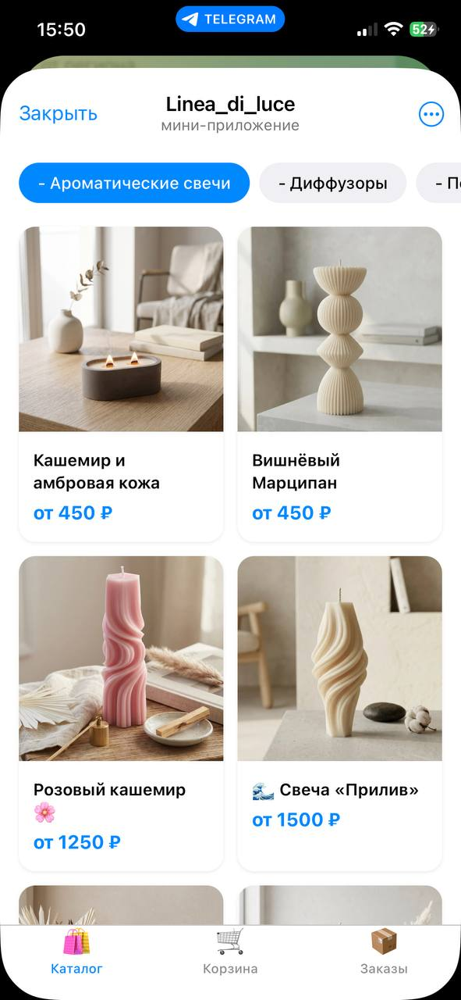
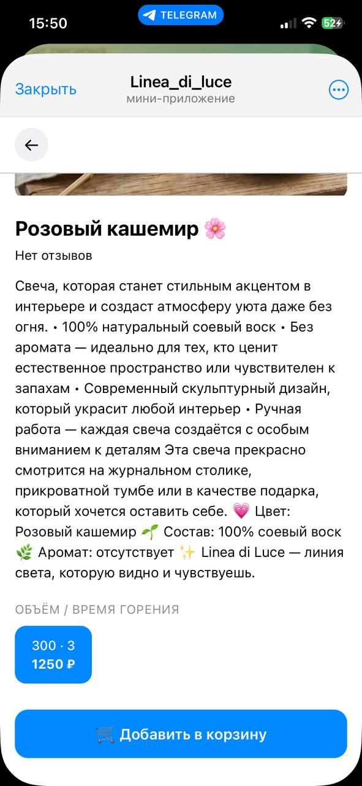

CRM
Знайте, кто покупает и что любит
Профиль, заказы, теги, заметки и общение с клиентом собраны вместе.
Магазин внутри Telegram
Каталог, заказы, оплата и клиенты — в одном понятном процессе. AI помогает подготовить товары из публикаций, а вы проверяете результат.

Один связный сценарий
Не переносите бизнес на новую площадку. Добавьте коммерческий слой туда, где уже живёт аудитория.
Публикуйте товары привычным способом: фото, описание, характеристики и цену.
AI распознаёт товар, категорию, варианты и цену. Вы проверяете данные перед публикацией.
Кнопка ведёт к товару, а аналитика показывает весь путь до подтверждённой оплаты.
Реальный продукт
Покупатель открывает каталог, выбирает вариант, оформляет и оплачивает заказ в знакомой среде.
Все возможности →
Одна панель
Заказ не теряется в переписке, клиент не остаётся без истории, а публикация — без понятного результата.
Профиль, заказы, теги, заметки и общение с клиентом собраны вместе.
Сегменты, рассылки, промокоды и персональные предложения.
Товары, варианты, остатки, оплаты и статусы заказов.
Ранний тариф
Вопросы
Анализирует публикации и готовит карточки товаров. Перед добавлением в каталог вы проверяете черновик.
Да. Платформа рассчитана на действующие каналы и может обработать уже опубликованные товарные посты.
Кнопку товара в публикации и мини-приложение с каталогом, корзиной, оформлением и оплатой.
Первые 7 дней бесплатны. Для первых 15 пользователей цена 1 499 ₽ в месяц фиксируется на один год.
Ваш канал уже показывает товары.